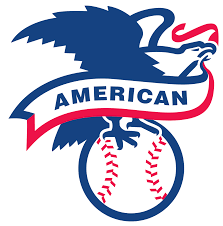

Index of Baseball Teams and Divisions
This index provides links to detailed information about the Savannah Bananas and their related Banana Ball teams, the Tri-City Chili Peppers, as well as the Major League Baseball (MLB) divisions and the teams within them. Click on a link to learn more about each team or division.
Player Galleries
You can find a showcase of some of the league's players by visiting the Player Gallery.
Banana Ball Teams
- Savannah Bananas: The original Banana Ball team, known for their unique brand of entertainment and fast-paced baseball.
- Party Animals: The main rivals to the Bananas, bringing their own energy and showmanship to Banana Ball.
- Texas Tailgaters: The newest Banana Ball team, representing Texas and known for their tailgate-themed performances.
- Firefighters: A team dedicated to honoring firefighters and first responders, adding a meaningful layer to Banana Ball.
- Indianapolis Clowns: A revival of a historic Negro Leagues team, joining the Banana Ball league in 2026 with a focus on skill and comedic entertainment.
- Loco Beach Coconuts: A new Banana Ball team for 2026, known for their beach-themed vibe and entertaining spirit.
Collegiate Summer Baseball
- Tri-City Chili Peppers: A collegiate summer team in the Coastal Plain League, known for their unique "Cosmic Baseball" events.
Major League Baseball Divisions and Teams
National League (NL)

- NL East: Comprising the Atlanta Braves, Miami Marlins, New York Mets, Philadelphia Phillies, and Washington Nationals.
- NL Central: Featuring the Chicago Cubs, Cincinnati Reds, Milwaukee Brewers, Pittsburgh Pirates, and St. Louis Cardinals.
- NL West: Home to the Arizona Diamondbacks, Colorado Rockies, Los Angeles Dodgers, San Diego Padres, and San Francisco Giants.
American League (AL)
- AL East: The division of the Baltimore Orioles, Boston Red Sox, New York Yankees, Tampa Bay Rays, and Toronto Blue Jays.
- AL Central: Includes the Chicago White Sox, Cleveland Guardians, Detroit Tigers, Kansas City Royals, and Minnesota Twins.
- AL West: Featuring the Houston Astros, Los Angeles Angels, Oakland Athletics, Seattle Mariners, and Texas Rangers.